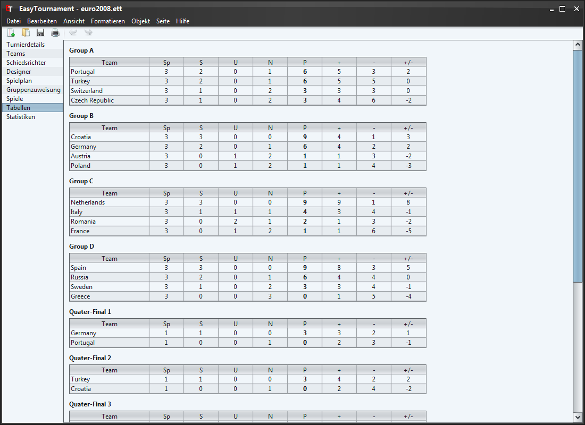

Wie der Name bereits sagt sind auf dieser Seite die aktuellen Tabellen zu sehen, welche nach den von Ihnen definierten Regeln sortiert werden.
Mit einem Klick auf die jeweilige Spaltenüberschrift lassen sie die Tabellen sortieren. Dies beeinflusst die Platzierung der Teams im Turnier jedoch nicht.
Die Tabellen-Ansicht lässt sich als CSV (z.B. für Tabellenverarbeitungsprogramme wie MS Excel) oder als HTML Datei exportieren. Dazu wählen sie das Menü "Datei"->"Exportieren..." und im sich öffnenden Dialog den Eintrag "Tabellen".
Im Speichern-Dialog (siehe nächstes Bild) können sie nun den gewünschen Dateityp auswählen.